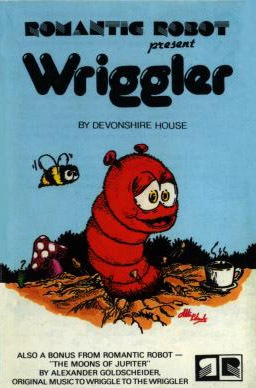
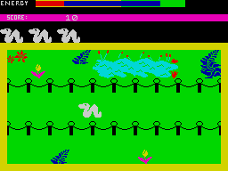

Wriggler


{kind=link}

| Publisher: | Romantic Robot |
| Price: | £5.95 |
| Year: | 1985 |
| Source: | CRASH, Issue 15 |

Wriggler is a maze game, or it could be an arcade game — well it might even qualify as an adventure of sorts. The simple truth is that Wriggler is all of these, and in some respects resembles Antics, the insectoidal game by Bug-Byte. The opening screen shows four maggots at the start of a race, and you are one of them — you know it’s a race because of the ant with the starting pistol, but you are not racing against the other maggots as they disappear soon after the race starts to become your extra lives.
The game seems simple enough to play, all that’s required is for you to guide your maggot down pathways until you find your way out of the maze and into the next, and the next, and the next.... In fact there are four main mazes, the first one being the Garden, followed by the Scrublands, the Underground (or Hell if life is rotten to you as well), and finally the Mansion with the lift shaft that should take you to the planet surface. There are a few other areas but if you find yourself in any of these then you goofed and life can only get worse.

make Wriggler delightful to play.
If this all sounds pretty straightforward, the fine print begins to make being a maggot sound less attractive. The first problem you will have to cope with is your diet; as maggot winds his way around the maze he uses up energy. This can be replenished by consuming many of the snacks left around. The menu includes such gourmet delights as milk shakes, bowls of cherries and cups of tea; should you be fairly well stocked with energy (a fact which is indicated by a bar code at the top of the screen) you can always pick up a snack and eat it later.
As well as food there are a few other objects that you will need in order to penetrate the mazes and these include tins of ant spray, keys, extra lives and a parachute. All these are essential for dealing with one situation or another, but you are only allowed to carry one object at a time, so you can imagine your despair as you fall the 1000 feet to the Underworld when you remember that you swapped your parachute for a bag of money.
Finding your way out of the mazes is one thing, getting past all the nasties in there is another. Your first encounter will be with the black or blue ants — fairly timid creatures these, if you stay out of their way they won’t harm you, collide with them and you lose energy which may be fatal. The white ants are a lot more unpleasant as they will chase you and any encounter nearly always ends badly for you. The only way of getting past them successfully is to use the ant spray. Other creatures generally have the same effect as the coloured ants, all except for the spider, a wonderfully animated creature but very deadly. Death itself is followed by a quickie funeral conducted on the spot. Should you have any lives left, resumption is from the same spot.
Wriggler takes place across 256 playing screens as you fight for survival in the Maggot Marathon to end them all, with the final object being to reach the planet surface. Points are awarded for picking up objects and eating food. When your energy level reaches a critical point on the bar at the top, the computer emits anxious beeps to remind you.
CRITICISM
‘This is Romantic Robot’s first excursion into the games world, and if all their games are up to this standard they could soon be amongst the top software houses. Wriggler is a totally original game, I certainly can’t think of another where you control a maggot anyway! The graphics are good and the animation of some of the creatures is excellent, have a look at the spider. Sound and colour are both used well. Wriggler is a fun game to play and offers hours of enjoyment to all, in fact of the games I’ve seen recently, this is one of the most enjoyable I’ve played. Overall, a very good game worth buying.’
‘Wriggler is an original game which has some very neat graphics and it is very different from anything I have seen before, except perhaps Antics which it slightly resembles at first. To be able to combine arcade features so well with adventure aspects and throw in a dash of strategy is an exceptional idea and although it has been done before, it seems to work especially well with this game. Colour has been put to good use throughout and does add that lively element that so many games miss out these days. Animation is very good too and I especially like the way the huge spider creeps forward ready to pounce, and the way ‘you’ wriggle about this huge nightmare of a maze (well aren’t all mazes nightmares)? I think this game presents quite a task and whether it will keep your interest really depends on what the other mazes have to offer — it’s difficult enough that I have yet to escape from the Garden. Sound isn’t too bad either, with some nice tunes. STOP PRESS — I’m in Hell now!!’
‘I must confess that my first impression of Wriggler was not a good one, I thought it was going to be rather dull. I was very wrong. The feature that attracted me the most, apart from the graphics and animation, was how the different elements, maze, arcade and adventure, combined to make this an absorbing game. The graphics, animation and choice of colour are superb, helping to make the display clear and uncluttered. At first I thought the movement was rather slow but when the action starts it’s best to have your wellies warmed and ready, your thinking cap on and your ant spray armed. Wriggler is very hard to win but the graphics alone make the challenge worth surmounting. I never thought I would enjoy spending so much time as a maggot.’
COMMENTS
| Control keys: | Q/W or O/P left/right, K/M or Q/A up/down, L,M,T or zero to pick up drop, alternatively QWERT or the cursors |
| Joystick: | Sinclair 2, Kempston, cursor type, Micro Power add-on |
| Keyboard play: | Responsive |
| Use of colour: | Excellent |
| Graphics: | Lively, well drawn, superbly animated and smooth |
| Sound: | Good tunes, reasonable spot effects |
| Skill levels: | 1 |
| Lives: | 4 with possibility of finding extra ones |
| Screens: | Over 250 |
| General Rating: | A different, lively and absorbing maze game which everyone found more addictive than they first thought. |
| Use of Computer: | 88% |
| Graphics: | 90% |
| Playability: | 91% |
| Getting Started: | 75% |
| Addictive Qualities: | 86% |
| Value For Money: | 89% |
| Overall: | 90% |